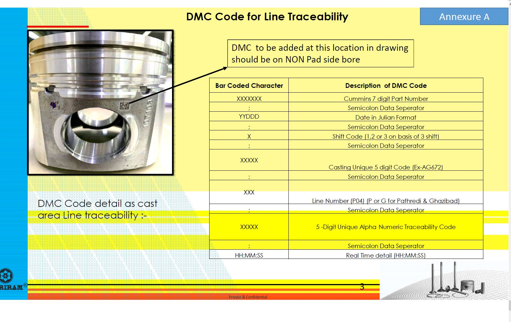

Instructions to initiate the test Traceability Web-Screen
- First unzip the
testWebApp.zip and extract its content
- Go within the unzipped folder , run the startup script by double clicking on it, to run the test server. The name of the script is
StartUpScript.cmd
- Check the listening port of the server as indicated in the sprung-up terminal. Refer the below image to see an example of running server's listening port. To manage listening port follow instruction at
Handling the listening port

- To go to the Part traceability screen, type in address:
http://localhost:port/ within the url-bar of your browser
- For eg: if listening port is
5500 then type-in as http://localhost:5500
- Now you should be able to see the traceability screen on your browser
Scan code test procedure
- The scanner input field only accepts the DMC code as PO annexure A. The annexure is shown below:
- 
- Currently only following data points have been configured in the test server.
- 1234567;07365;3;AG672;G04;P4567;07:09:26
- CA22L0015
- 1236789;11111;1;ABCDE;p01;A1234;22:03:06
- 1236789;11111;1;ABCDG;p01;A1234;22:03:06
- For more data points in the test, fill additional
jsonObject string within the file DataStorage\data.json
- Scan code are case-insensitively validated and checked on server end
Handling the listening port :
- Default port is 8080, but use the listenning port as indicated in the terminal
- To change the port, edit the property-value
AppPort-http within the file ServerConfig.json to change the listening port
- If listening port is changed. restart the test server using the startup script